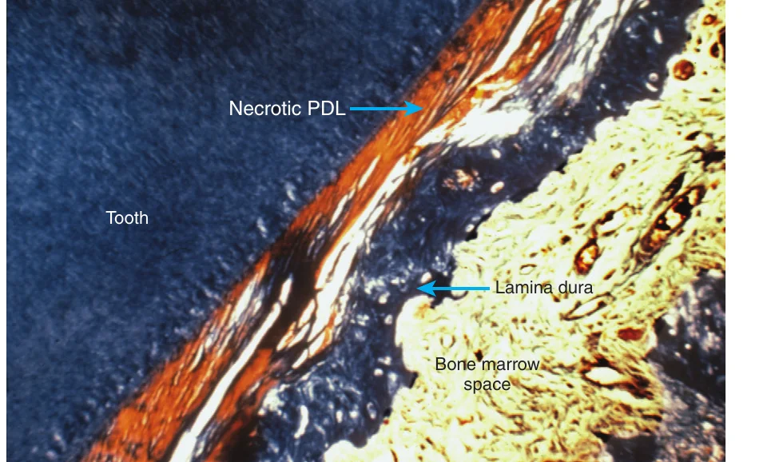

نسخه استخراجشده؛ ترجمه یا تأیید علمی انجام نشده است. وضعیت: captured
شهود میگوید نیروی بیشتر یعنی حرکت سریعتر. زیستشناسی میگوید برعکس.
| نیرو | پاسخ بافتی | نتیجه |
|---|---|---|
| سبک | خونرسانی PDL حفظ میشود، بازجذب مستقیم از سطح | حرکت پیوسته، درد کم |
| سنگین | قطع خونرسانی، هیالینیزاسیون گسترده | توقف حرکت، درد زیاد، تحلیل ریشه |
تفاوت بنیادی در مسیر بازجذب است. با نیروی سبک، استئوکلاستها مستقیماً از سطح لامینا دورا کار میکنند و حرکت بیوقفه ادامه مییابد.
با نیروی سنگین، بافت نکروتیک میشود و بازجذب باید از فضاهای مغز استخوان مجاور و از زیر پیش برود — همان بازجذب زیرکاواژ که هفتهها طول میکشد و در همان مدت، حرکت متوقف است.
| حرکت | نیروی تقریبی (گرم) |
|---|---|
| تیپینگ | ۳۵ تا ۶۰ |
| حرکت بدنهای | ۷۰ تا ۱۲۰ |
| چرخش | ۳۵ تا ۶۰ |
| اکستروژن | ۳۵ تا ۶۰ |
| اینتروژن | ۱۰ تا ۲۰ — کمترین |
| تورک ریشه | ۵۰ تا ۱۰۰ |
💡 چرا اینتروژن کمترین نیرو را میخواهد؟ چون کل نیرو روی سطح کوچک اپکس متمرکز میشود.
و چرا حرکت بدنهای بیشترین را؟ چون نیرو روی کل سطح ریشه پخش میشود و برای رسیدن به همان فشار مؤثر، به نیروی بزرگتری نیاز است.
پس این اعداد را حفظ نکن — منطقشان را بفهم: همه از یک اصل واحد میآیند که در اسلاید بعد میبینی.

آنچه بافت حس میکند «نیرو» نیست، فشار است: نیرو تقسیم بر سطح ریشهی درگیر.
👉 به همین دلیل نیروی بهینه با نوع حرکت و اندازهی دندان تغییر میکند.
و یک نکته دربارهی حرکت بدنهای: نیروی بیشتر بهتنهایی آن را نمیسازد. نیرویی که به تاج وارد میشود دندان را حول مرکز مقاومت میچرخاند؛ براکت باید همزمان ممانی در جهت مخالف بدهد، وگرنه نتیجه فقط تیپینگ است.
و همین اصل، یکی از مهمترین قواعد ارتودنسی بزرگسال را میسازد: در پریودنشیوم کمارتفاع، سطح ریشهی درگیر کمتر است — پس همان نیروی همیشگی، فشار بیشتری میسازد و از مرز ایمن میگذرد.
پاسخ درست، کاهش نیروست؛ نه افزایش آن به امید حرکت سریعتر.
نوع سؤال: ساخت کلمه · 8 خانه
حروف منبع: ن · ر · ی · ت · ا · و · ن · ژ